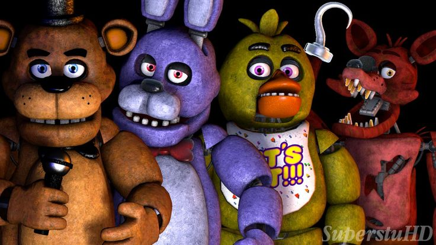
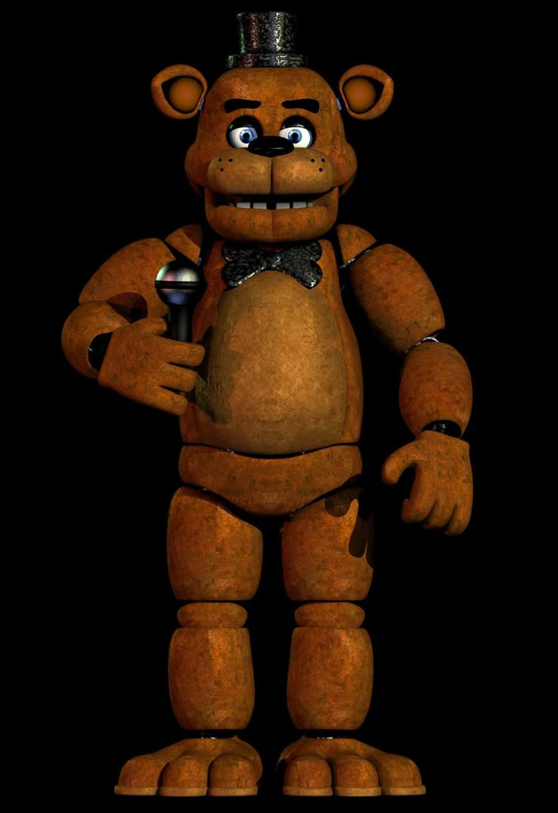
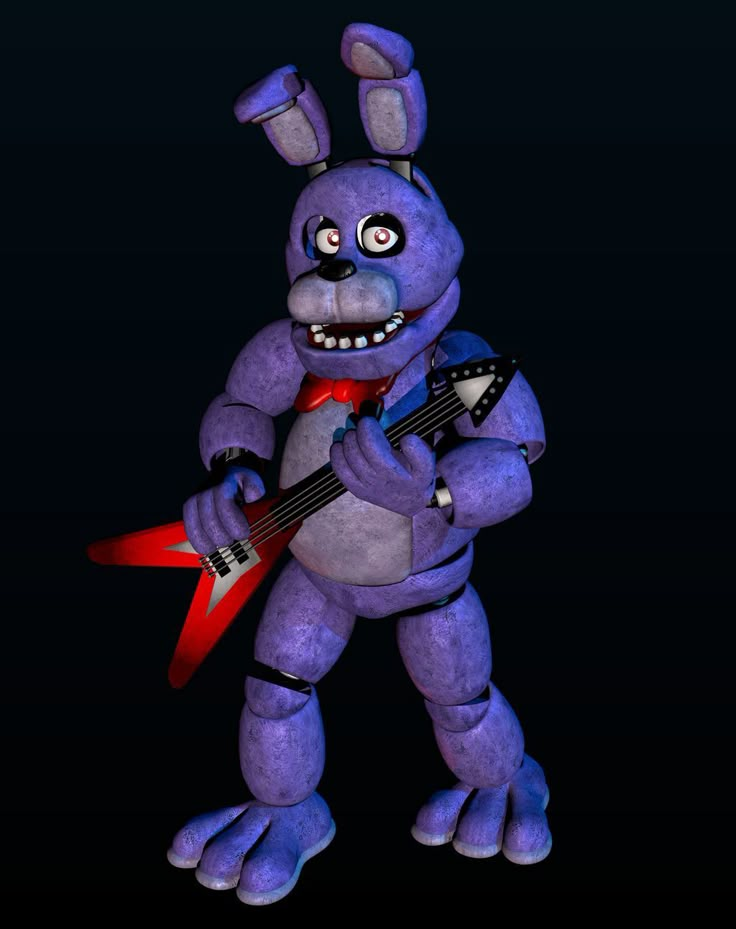
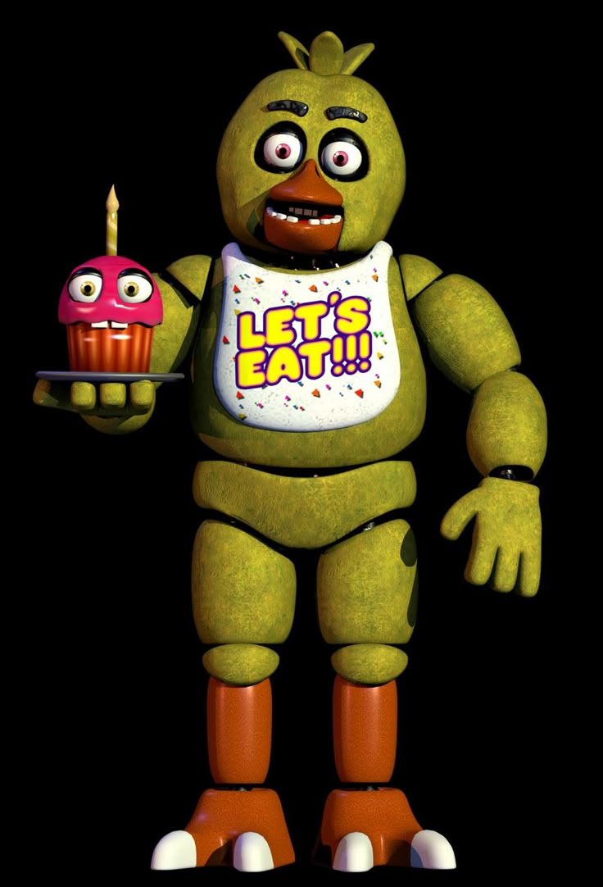
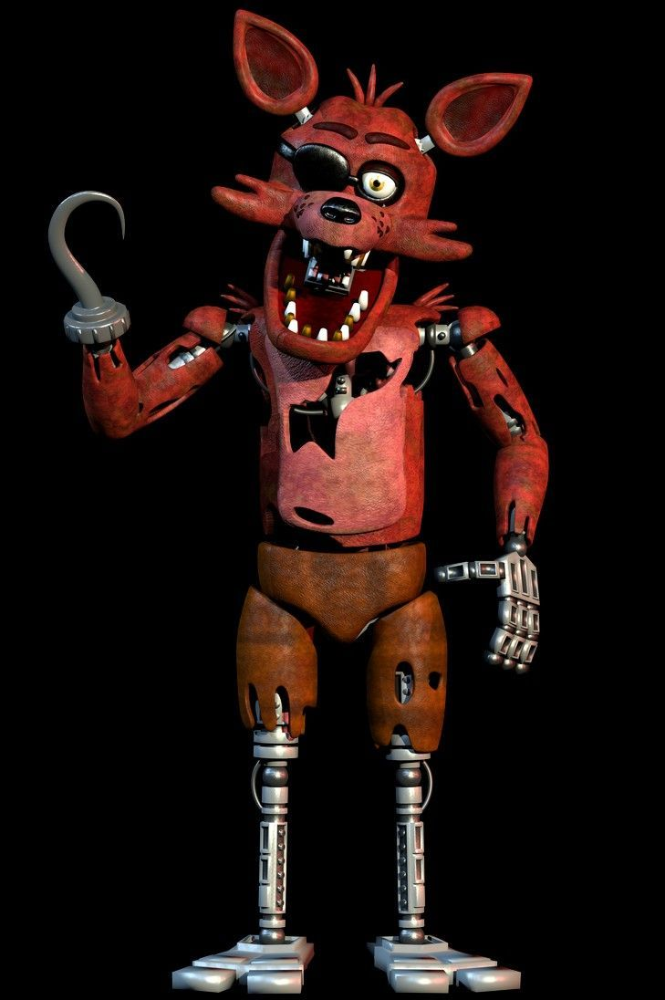
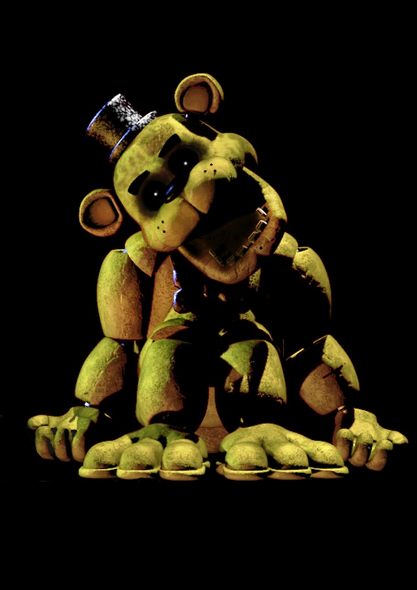

| JOGOS | LOJA | VOLTAR | HISTORIA | MAIS | ||||
|
 |
||||
ATENÇÃOEsta página mostra apenas os personagens do primeiro jogo.
 "Better luck next time."/"Mais sorte da próxima vez."Freddy Fazbear, o carismático urso pardo que usa cartola e gravata é tanto o rosto da Fazbear Entertainment quanto o líder do grupo de robôs animatrônicos dos jogos seguintes. Freddy, apesar de se mover ao redor da pizzaria a partir da noite quatro, se movimenta mais rapidamente e de forma mais agressiva se a energia estiver baixa.
 Bonnie, o coelho, geralmente atua como o guitarrista principal, tendo duas principais exceções: BonBon(Fnaf 5) e Glamrock Bonnie(Fnaf Security Breach). Bonnie ataca desde a primeira noite, sendo um desafio recorrente para o jogador.
 Chica, a galinha, apesar de não tocar nenhum instrumento neste jogo, foi a primeira personagem feminina a ser introduzida e apareceu eu praticamente todos os jogos da franquia. Chica começa a se mover a partir da segunda noite, seguindo uma rota para atacar a porta oposta à de Bonnie.
 "Never underestimate the cunning of a pirate. Or a fox for that matter!"/"Nunca subestime a astúcia de um pirata. Ou duma raposa nesse caso!"Foxy, a raposa pirata, é sem dúvidas um dos personagens mais amadados da franquia, se não o mais amado. É o primeiro animatrônico a ter uma mecânica especial: Foxyrequer que o jogador fique de olho na camêra 1C para que ele não saia da Enseada Pirata(seu palco próprio) e corra até o escritório do jogador.
 Este é Golden Freddy. Apresentado pela primeira vez em Fnaf como um easteregg(personagen secreto) em no primeiro jogo, causou comoções em 2014 por não haver traços ou explicações de sua existência na história do jogo, nem mesmo o antigo guarda do local o citou em suas ligações para o jogador. Golden Freddy logo se mostrou um personagem importante para a história a medida que os jogos saíam.
|
||||
|
FNAFWIKI© TODOS OS DIREITOS RESERVADOS |
||||